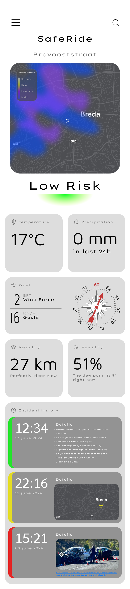
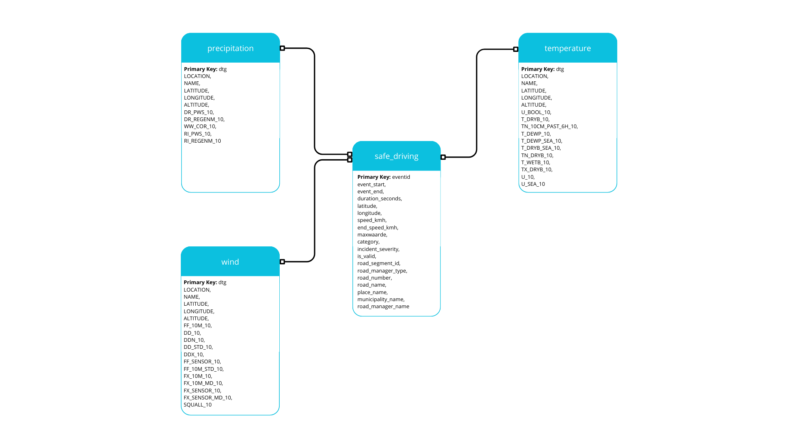
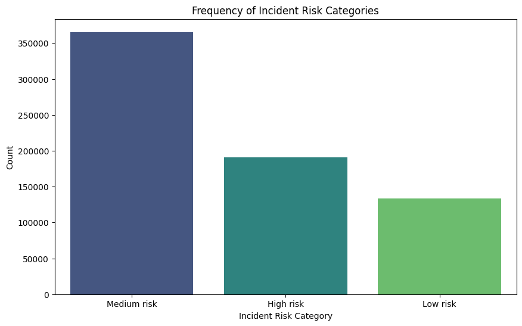
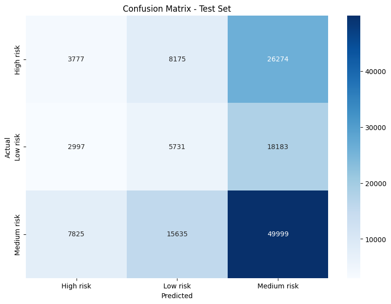
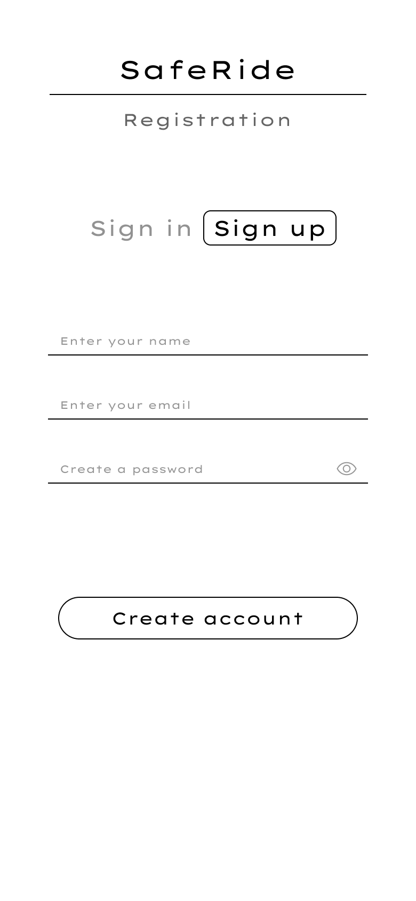
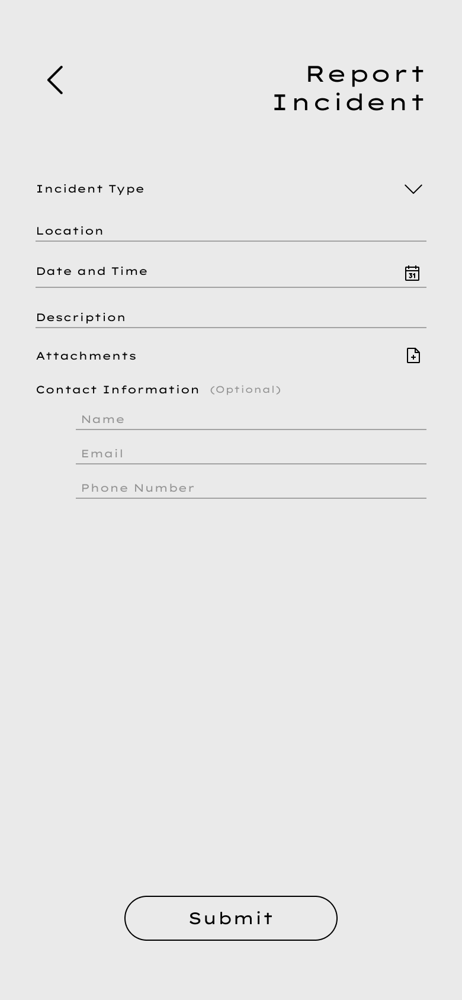
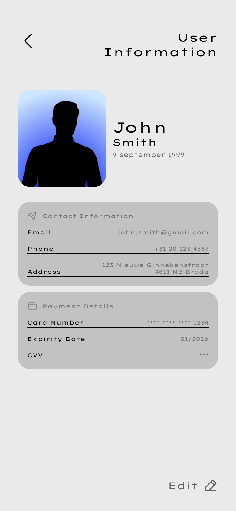
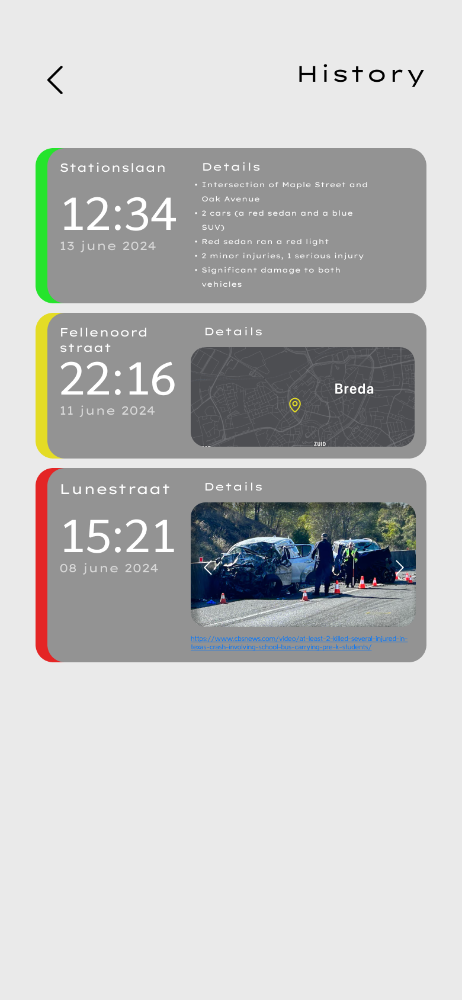

Predicting road incident risk levels (Low / Medium / High) in Breda using weather data + ANWB incident records. Four models compared, 138K records, Streamlit prototype, and a full mobile app design in Figma.

ANWB collects road incident data across the Netherlands. The question: given weather conditions at a specific time and place, can you predict whether the risk of an incident is Low, Medium, or High?
I joined four datasets — ANWB incident reports and three KNMI weather tables (temperature, wind, precipitation) — on rounded hourly timestamps, engineering a composite risk score from the combined signals. After cleaning and joining: ~138,000 records.
Four ML models were trained and compared. The result wasn't the one with the highest raw accuracy — it was the one with the best balance across all three risk classes. That distinction matters in a safety application.


The target variable doesn't exist in the raw data — it has to be engineered. A composite risk score was built from three components, each binned 1–3:
| Component | Bins | Logic |
|---|---|---|
| Temperature risk | 1–3 | cold → mild → hot |
| Street risk | 1–3 | historical accident count per road |
| Wind speed risk | 1–3 | calm → moderate → strong |
Total = temp + street + wind → thresholded into risk classes:
Additional interaction features: temp × wind_speed and wind_diff. The resulting class distribution (Low 19%, Medium 53%, High 28%) reflects real-world incident patterns — an important finding in itself.
Four models were trained and compared. Random Forest achieved the highest raw accuracy, but its F1 on Low Risk was 0.01 — it essentially couldn't predict that class at all. That's unacceptable for a safety application.
KNN (k=11) was selected for deployment because it maintained the best balance across all three risk classes, despite not having the highest headline accuracy number.
| Model | Accuracy | Note |
|---|---|---|
| Random Forest | 71.7% | F1 on Low Risk: 0.01 |
| Gradient Boosting | ~70% | Best recall on High Risk |
| KNN (k=11) ✓ | 69.2% | Best class balance |
| Neural Network | ~68% | Dense MLP, no gain |

Beyond the ML model, a complete mobile application was designed in Figma — covering the full user flow from signup to real-time risk alerts and incident reporting.
The design covers: home map with live risk overlays, incident history, report form, user profile, and onboarding. All screens are linked and interactive in Figma.
View Full Figma Design ↗



Data pipeline, SQL queries, feature engineering, model comparison notebooks, Streamlit app, and Figma design.